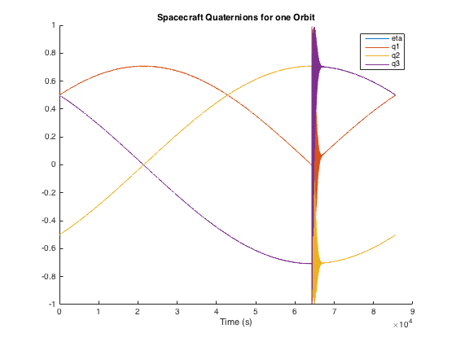
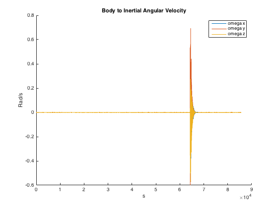
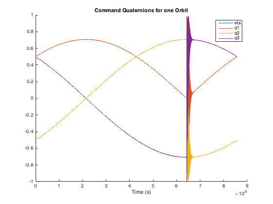
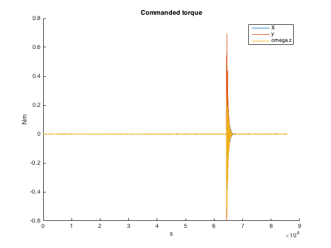

Contents
Assignment 2
Set up for simulink
ecc = 0;
a = 42000;
inc = 0;
raan = 0;
omega = 0;
theta = 180;
mu = 398600;
[rvect,vvect]=COES2rvd(a,ecc,inc,raan, omega, theta);
x = [1 0 0];
y = [0 1 0];
z = [0 0 1];
h_a = cross(rvect, vvect);
k_hat = -rvect/norm(rvect);
j_hat = -h_a/norm(h_a);
i_hat = cross(j_hat, k_hat);
Q= [i_hat j_hat k_hat];
DCM = [dot(x, i_hat) dot(x, j_hat) dot(x, k_hat);
dot(y, i_hat) dot(y, j_hat) dot(y, k_hat);
dot(z, i_hat) dot(z, j_hat) dot(z, k_hat)];
w =[.5e-7; 7.27e-7; 3e-7];
wbn0 = DCM*w;
J = [3500 0 0; 0 3200 0; 0 0 2500];
Jinv = inv(J);
T = 2*pi*sqrt(a^3/mu);
tprop = T;
q = DCM2quat(DCM);
eta0 = q(1);
epsilon0 = q(2:4);
ts = 30;
zeta = .65;
nf = -log(.02)/(ts*zeta);
kd = J*2*zeta*nf;
kp = J*2*nf^2;
n= 1/T;
Run Simulink
sim('satPropWThrusterControl');
Make Plots
close all
figure(1)
hold on
plot(quat.time,quat.data(:, 1))
plot(quat.time,quat.data(:, 2))
plot(quat.time,quat.data(:, 3))
plot(quat.time,quat.data(:, 4))
legend('eta', 'q1', 'q2', 'q3')
title('Spacecraft Quaternions for one Orbit')
xlabel('Time (s)')
figure(2)
hold on
plot(wbn.time, wbn.Data(:,1))
plot(wbn.time, wbn.Data(:,2))
plot(wbn.time, wbn.Data(:,3))
ylabel('Rad/s')
xlabel('s')
title('Body to Inertial Angular Velocity')
legend('omega x', 'omega y', 'omega z')
figure(3)
hold on
plot(q_command.time,quat.data(:, 1))
plot(q_command.time,quat.data(:, 2))
plot(q_command.time,quat.data(:, 3))
plot(q_command.time,quat.data(:, 4))
legend('eta', 'q1', 'q2', 'q3')
title('Command Quaternions for one Orbit')
xlabel('Time (s)')
figure(4)
hold on
plot(wbn.time, wbn.Data(:,1))
plot(wbn.time, wbn.Data(:,2))
plot(wbn.time, wbn.Data(:,3))
ylabel('Nm')
xlabel('s')
title('Commanded torque')
legend('X', 'y', 'omega z')
len = length(Tc.time)/2;
fprintf('Max torque on X axis %f \n', max(Tc.data(:,1)))
fprintf('Max torque on Y axis %f \n', max(Tc.data(:,2)))
fprintf('Max torque on Z axis %f \n', max(Tc.data(:,3)))
fprintf('When we ignore the 360 deg swivel\n')
fprintf('Max torque on X axis %f \n', max(Tc.data(1:len,1)))
fprintf('Max torque on Y axis %f \n', max(Tc.data(1:len,2)))
fprintf('Max torque on Z axis %f \n', max(Tc.data(1:len,3)))
fprintf('An ion thruster could deliver this kind of torque because\n');
fprintf('they are typically .5 N thrusters and a %f Nm torque would \n',...
max(Tc.data(1:len,2)));
fprintf('be reasonable\n');
Max torque on X axis 504.877169
Max torque on Y axis 496.707258
Max torque on Z axis 415.319672
When we ignore the 360 deg swivel
Max torque on X axis 0.012825
Max torque on Y axis 0.004973
Max torque on Z axis 0.002692
An ion thruster could deliver this kind of torque because
they are typically .5 N thrusters and a 0.004973 Nm torque would
be reasonable
   